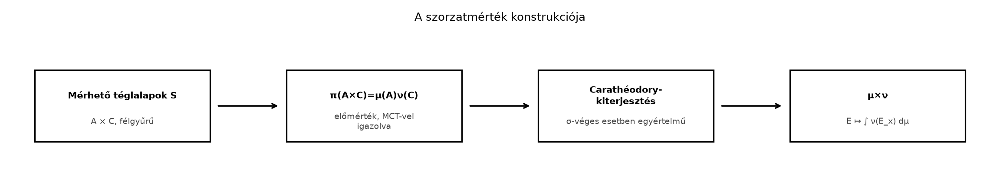

A A szorzat-σ-algebra és a metszetek
mérhetősége alfejezetben láttuk, hogy az
és
mérhető terekből képzett
szorzat-σ-algebrán a metszetek jól viselkednek. A következő lépés az,
hogy ha
és
mérték az
,
illetve
téren, akkor értelmezzük az
téren azt a mértéket, amely egy téglalaphoz a két oldal mértékének
szorzatát rendeli. A téglalapok mértéke világos:
A kérdés az, hogy ez a hozzárendelés egyértelműen kiterjeszthető-e a
teljes
σ-algebrára, és hogy a metszetek integrálja ugyanezt a mértéket adja-e.
Ez utóbbi lesz a Tonelli- és Fubini-tétel alapja.
11.2.2 Szemléletes kép
A konstrukció lánca a már megismert Carathéodory-receptet követi: a
mérhető téglalapok félgyűrűjén definiálunk egy előmértéket, majd
kiterjesztjük.

A szorzatmérték konstrukciója - A
bizonyítás fő lépései: téglalapokon adott előmérték,
Carathéodory-kiterjesztés, majd azonosítás a
metszetintegrállal.
A lánc első eleme az A szorzat-σ-algebra és a
metszetek mérhetősége alfejezetben bizonyított félgyűrű-tulajdonság,
az utolsó elem pedig a metszetfüggvény integrálja, amelyet hamarosan
definiálunk.
11.2.3 A szorzatmérték
definíciója
Definíció. Legyen
és
mértéktér. Az a
mérték az
szorzat-σ-algebrán, amelyre
teljesül, a
és
mértékek szorzatmértéke (product measure).
A
konvenció azért kell, mert ha például
és
,
akkor a téglalap „vízszintes irányban nulla”, függőleges irányban
végtelen hosszú; a szorzatmértéke természetesen nulla.
11.2.4 A metszetfüggvény
mérhetősége
A metszetintegrálos formulához először igazolnunk kell, hogy a
függvény mérhető. A bizonyítás a π-λ tételre támaszkodik, ezért a már
bevezetett π-rendszerek, λ-rendszerek és a
Dynkin-tétel alfejezetet használjuk.
Lemma. Ha
σ-véges mérték a
téren, akkor minden
esetén az
függvény
-mérhető.
Bizonyítás.
Először tegyük fel, hogy
,
azaz
véges mérték. Tekintsük a
halmazrendszert. Megmutatjuk, hogy
λ-rendszer.
Az alaphalmaz eleme.
minden
-re,
ezért
konstans, tehát mérhető. Így
.
Tartalmazó különbség. Ha
és
,
akkor minden
-re
.
Mivel
,
a mérték additivitása és a végesség miatt
Két mérhető függvény különbsége mérhető, tehát
.
Diszjunkt megszámlálható unió. Ha
páronként diszjunkt, és
,
akkor minden rögzített
-re
az
halmaz a páronként diszjunkt
halmazok uniója. A mérték σ-additivitása miatt
A részletösszegek
mérhető függvények, és pontonként monoton nőnek
-hez.
A Határértékek mérhetősége alfejezet szerint a
pontonkénti limesz is mérhető, tehát
.
Beláttuk, hogy
λ-rendszer. Továbbá
tartalmazza a mérhető téglalapok
rendszerét, hiszen ha
,
akkor
ezért
,
ami
-mérhető.
Mivel
π-rendszer, a π-λ tételből
Ez éppen a véges eset állítása.
Ha
csak σ-véges, válasszunk olyan
halmazokat, amelyekre
és
minden
-re.
Definiáljuk a
véges mértékeket. Az imént bizonyított véges esetet alkalmazva minden
-re
az
függvény
-mérhető.
Mivel
,
a mérték alulról való folytonossága miatt
.
Így
mérhető függvények pontonkénti limesze, tehát maga is mérhető. ∎
11.2.5 A szorzatmérték tétele
Tétel. Legyen
és
két σ-véges mértéktér. Ekkor pontosan egy olyan
mérték létezik az
szorzat-σ-algebrán, amelyre minden
és
esetén
Továbbá minden
esetén
Bizonyítás. A bizonyítást három lépésben
végezzük.
11.2.5.1 1. lépés: a téglalapokon
definiált hozzárendelés előmérték
Belátjuk, hogy
előmérték. A
világos. A σ-additivitáshoz tegyük fel, hogy
páronként diszjunkt felbontás, ahol
,
.
Rögzítsünk egy
pontot. A bal oldal metszete:
A jobb oldal metszete
Mivel a téglalapok páronként diszjunktak, ez utóbbi unió is páronként
diszjunkt, ezért
Mindkét oldalt
szerint integrálva, a jobb oldali nemnegatív részletösszegekre
alkalmazva a monoton konvergencia tételt,
Tehát
valóban előmérték.
11.2.5.2 2. lépés: kiterjesztés és
egyértelműség
Mivel
és
σ-végesek, léteznek
,
,
és
,
,
halmazok. Ekkor
és
Ezért
σ-véges előmérték az
félgyűrűn. A A kiterjesztési tétel és az
egyértelműség alfejezet értelmében
egyértelműen kiterjed egy
mértékké az
által generált
σ-algebrára. Ezzel a létezést és az egyértelműséget beláttuk.
11.2.5.3 3. lépés: a
metszetintegrálos formula
A most kapott
mértékről még nem tudjuk, hogy megegyezik-e a metszetek integráljával.
Definiáljuk az
hozzárendelést. A fenti lemma miatt
mérhető, így
értelmes. Megmutatjuk, hogy
mérték.
,
mert
minden
-re.
Legyen
páronként diszjunkt, és
.
Ekkor minden
-re
is páronként diszjunkt, és
A részletösszegek nemnegatívak és monoton nőnek, ezért a monoton
konvergencia tétellel
Tehát
mérték. Ha
mérhető téglalap, akkor
A
mérték tehát a
előmérték egy kiterjesztése az
σ-algebrára. A σ-végesség miatt a kiterjesztés egyértelmű, így
.
Ugyanez az érvelés elmondható a másik metszetiránnyal is, tehát
∎
Továbbvitt eredmény. A most megkonstruált
szorzatmérték és a metszetintegrálos formula az Tonelli és Fubini tétele alfejezetben az integrálok
felcserélésének központi eszköze lesz; a Lebesgue-szorzatmérték pedig a
Függvények konvolúciója alfejezet konvolúciós
integráljainak mérhetőségi és integrálási keretét adja.
11.2.6 Kidolgozott példa
Legyen
,
és
,
a Lebesgue-mérték. Tekintsük az
háromszöget. Ekkor
-metszete
Ezért
minden
-en,
így a metszetintegrálos formula szerint
A másik irányból:
,
így
,
tehát
A két számolás természetesen ugyanazt adja: a háromszög területe
.
11.2.7 Ellenpélda σ-végesség
nélkül
A tételben a σ-végesség feltétele nem hagyható el. Legyen
,
.
Legyen
a számláló mérték,
a Lebesgue-mérték. A
mérték nem σ-véges, mert
nem megszámlálható, és megszámlálható sok véges halmaz uniója legfeljebb
megszámlálható.
Tekintsük az átlót:
A
halmaz zárt
-ben,
tehát Borel-halmaz, azaz
.
Számoljuk ki a két metszetintegrált.
Az
-metszet
,
ezért
minden
-re.
Így
Az
-metszet
,
ezért
.
Így
A két iterált metszetintegrál eltér. Ha
és
σ-végesek lennének, a tétel szerint mindkettőnek
-vel
kellene egyenlőnek lennie. A példa tehát megmutatja, hogy σ-végesség
nélkül a félgyűrűn megegyező konstrukciók a generált σ-algebrán már
eltérhetnek; a szorzatmérték nem egyértelmű.
11.2.8 A Lebesgue-mérték
-ben
és
-ben
Legyen
a Lebesgue-mérték a
Borel-σ-algebrán. Mivel
σ-véges, a szorzatmérték tételével kapjuk a
mértéket a
σ-algebrán. Minden
és
esetén
tehát a félig nyílt téglalapok mértéke éppen a közönséges terület. A
teljes Lebesgue-mértéket
-ben
a teljessé tétellel kapjuk, de annak Borel-halmazokra való leszűkítése
éppen
.
-re
indukcióval definiálhatjuk:
Ekkor a
Borel-halmazokon minden
-dimenziós
téglatest mértéke az oldalhosszak szorzata:
Ezzel a Lebesgue-mérték a síkon és a magasabb dimenziós euklideszi
térben ugyanabból a szorzatmérték-konstrukcióból származik, mint a hossz
-en.
11.2.9 Tipikus hibák és
félreértések
A σ-végesség elhagyása. Gyakori hiba azt
gondolni, hogy a szorzatmérték a téglalapok képlete által mindig
egyértelműen meghatározott. A fenti számláló × Lebesgue példa mutatja,
hogy σ-végesség nélkül a metszetintegrálos formulák eltérhetnek az
átlón, tehát a konstrukció nem egyértelmű.
A metszetfüggvény mérhetőségének feltétel nélküli
állítása. Az
függvény mérhetősége csak akkor igaz általánosan, ha
σ-véges. A lemma bizonyításában a véges esetben használjuk a
kivonást; végtelen mérték esetén
nem értelmezhető, ezért van szükség a σ-véges darabokra
vágásra.
A
konvenció figyelmen kívül hagyása. Ha
és
,
akkor a téglalap szorzatmértéke
,
nem pedig határozatlan. Ez biztosítja, hogy a nullmértékű halmazok
szorzata is nullmértékű legyen.
11.2.10 Feladatok
11.2.10.1 1. feladat — fogalmi
ellenőrzés
Legyen
és
mérhető tér,
σ-véges mérték. Igaz-e, hogy tetszőleges
részhalmaz esetén az
függvény
-mérhető?
Válaszát indokolja.
11.2.10.2 2. feladat —
számolás
Legyen
,
.
Számítsa ki a
halmaz
-mértékét
a metszetintegrálos formulával, mindkét irányban.
11.2.10.3 3. feladat —
bizonyítás
Legyen
véges mérték a
téren. Igazolja, hogy az
rendszer λ-rendszer. Ezzel a feladattal a fenti lemma bizonyításának
kulcslépését gyakoroljuk; az állítást a Tonelli és
Fubini tétele alfejezet is használja.
11.2.10.4 4. feladat —
ellenpélda
Legyen
,
a számláló mérték és
a Lebesgue-mérték. Mutassa meg, hogy
nem σ-véges, és számítsa ki a
átlóra a
iterált integrálokat. Mit mutat az eredmény a szorzatmérték
egyértelműségére nézve?
11.2.11 Megoldások
11.2.11.1 1. feladat megoldása
Nem igaz. A lemma csak
halmazokra vonatkozik. Ha
nem mérhető a szorzat-σ-algebrában, akkor egyes metszetei sem
feltétlenül mérhetők
-ben,
és a
kifejezés sem feltétlenül értelmes. A mérhetőség tehát a
szorzat-σ-algebrához tartozáshoz kötődik.
11.2.11.2 2. feladat megoldása
Az
-metszet:
Ezért
,
és
A másik irányban
,
tehát
,
és
11.2.11.3 3. feladat megoldása
Ellenőrizni kell a λ-rendszer három tulajdonságát.
Alaphalmaz:
minden
-re,
ezért
konstans, ami mérhető. Tehát
.
Tartalmazó különbség: ha
és
,
akkor
.
Mivel
és
véges,
Mérhető függvények különbsége mérhető, így
.
Diszjunkt unió: ha
páronként diszjunkt, akkor minden
-re
A részletösszegek mérhetőek, és pontonkénti limeszük is mérhető a Határértékek mérhetősége szerint. Ezért
.
11.2.11.4 4. feladat megoldása
A
számláló mérték nem σ-véges
-en,
mert ha
véges halmazok, akkor
,
de
legfeljebb megszámlálható, így nem lehet a nem megszámlálható
halmaz.
Az
-metszetre
,
így
minden
-re,
tehát
Az
-metszetre
,
így
,
ezért
A két iterált integrál különbözik, ami azt mutatja, hogy σ-végesség
hiányában a félgyűrűn megegyező konstrukciók a generált σ-algebrán
eltérhetnek, ezért a szorzatmérték nem egyértelmű.
11.2.12 Rövid összefoglaló
Legyen
és
σ-véges mérték. A mérhető téglalapok
félgyűrűjén a
hozzárendelés előmérték, mégpedig σ-véges, ezért a A
kiterjesztési tétel és az egyértelműség szerint egyértelműen
kiterjed egy
mértékké az
szorzat-σ-algebrára. Minden
esetén
Ehhez igazoltuk, hogy ha
σ-véges, akkor
-mérhető;
a bizonyítás a π-λ tételt használja. Az
-beli
Lebesgue-mérték a
szorzatmérték Borel-halmazokon, és a téglatestek mértéke az oldalhosszak
szorzata. σ-végesség nélkül a szorzatmérték nem egyértelmű; példa erre a
számláló mérték és a Lebesgue-mérték szorzata
-en,
ahol a két metszetintegrál az átlón
,
illetve
.
Továbbvitt eredmény: a
szorzatmérték és a metszetintegrálos formula a Tonelli és Fubini tétele alapja; a
Lebesgue-szorzatmérték pedig a Függvények
konvolúciója alfejezetben használt konvolúciós integrálok keretét
adja.
11.2.13 Források és ellenőrzési
hiányok
Az alfejezet a klasszikus mértékelméleti anyagra épül, ahogyan a
fejezet forráskiindulópontjaiban szereplő művek (Tao, Folland, Axler) is
tárgyalják. Konkrét oldalszámot, tételszámot vagy pontos idézetet nem
állítok ellenőrzöttként. A jelölések a könyv bevezetőjében rögzített
konvenciókat követik; a
egyenlőséget a jó halmazok elvével lehet igazolni, itt csak
felhasználtam.